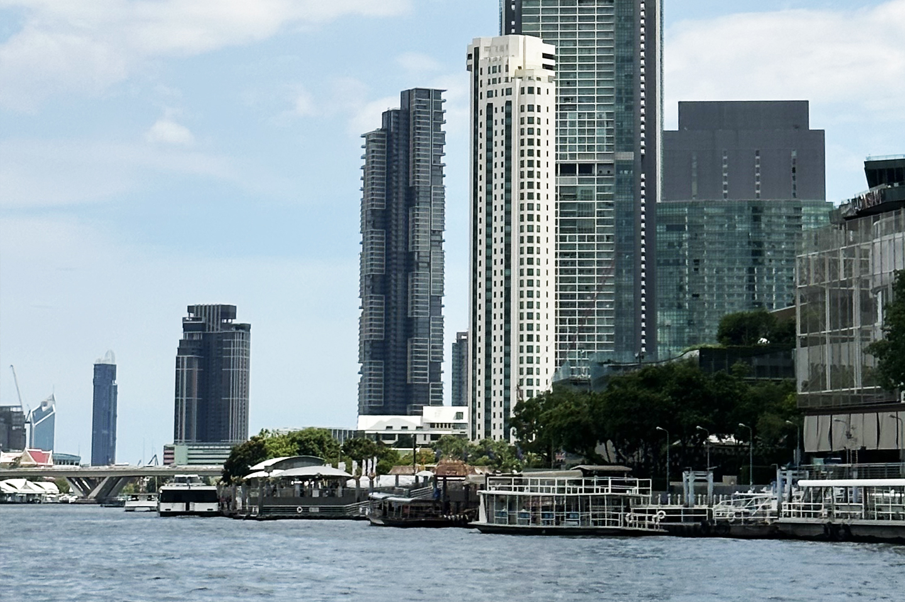
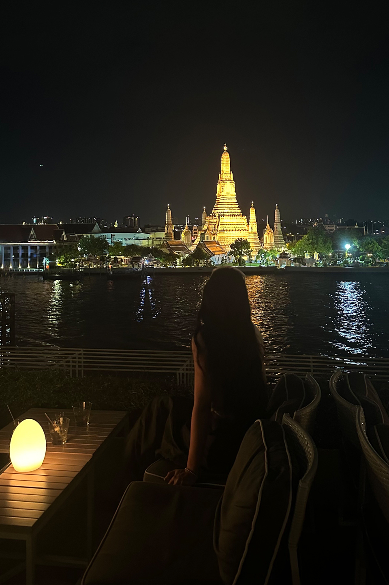
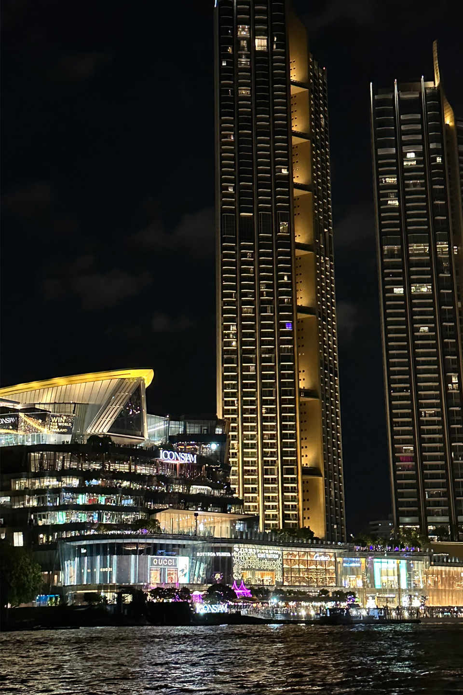
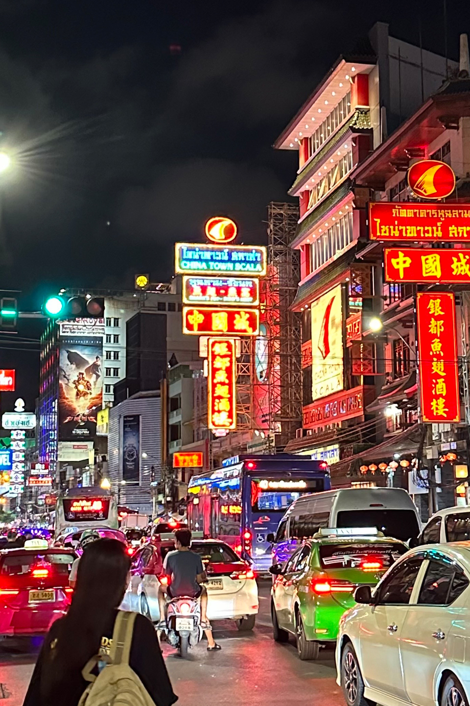
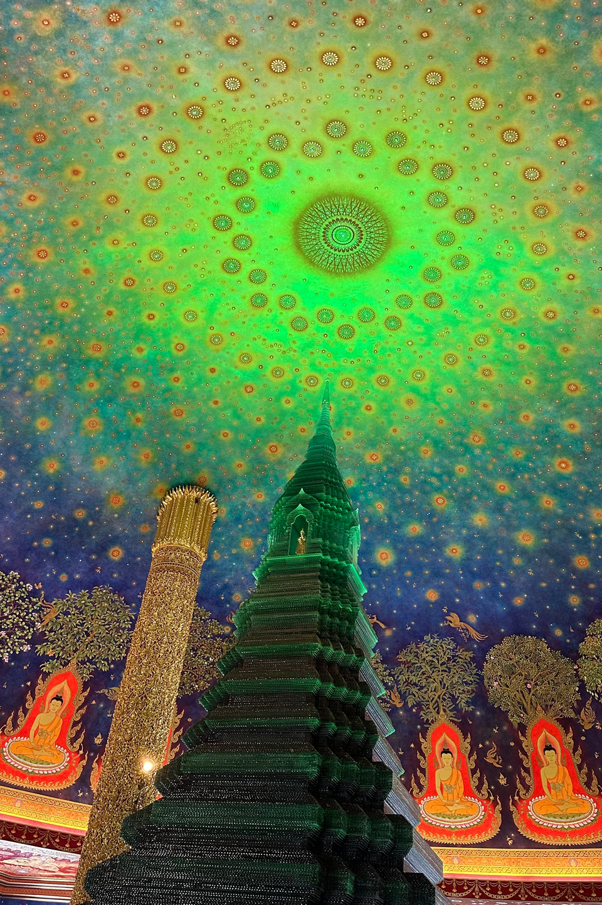
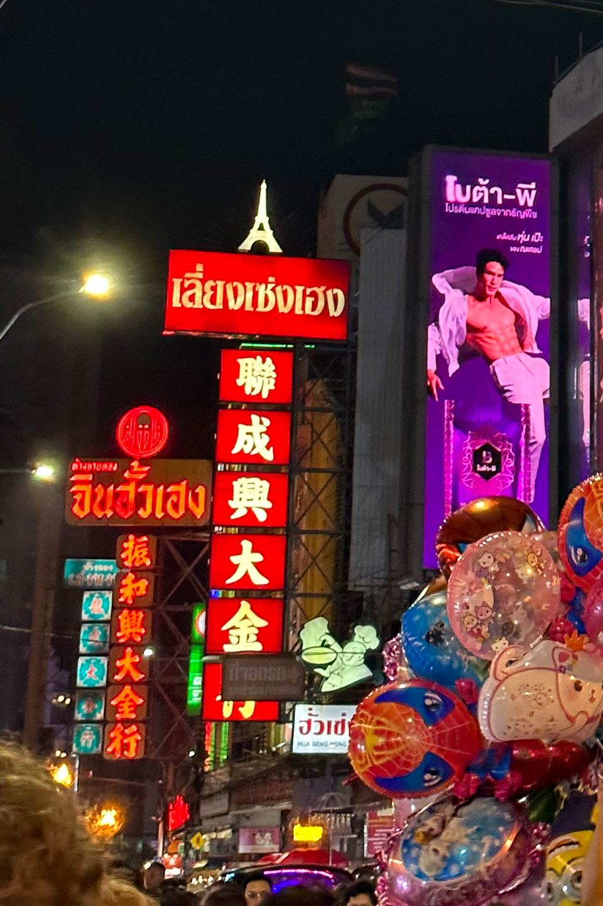
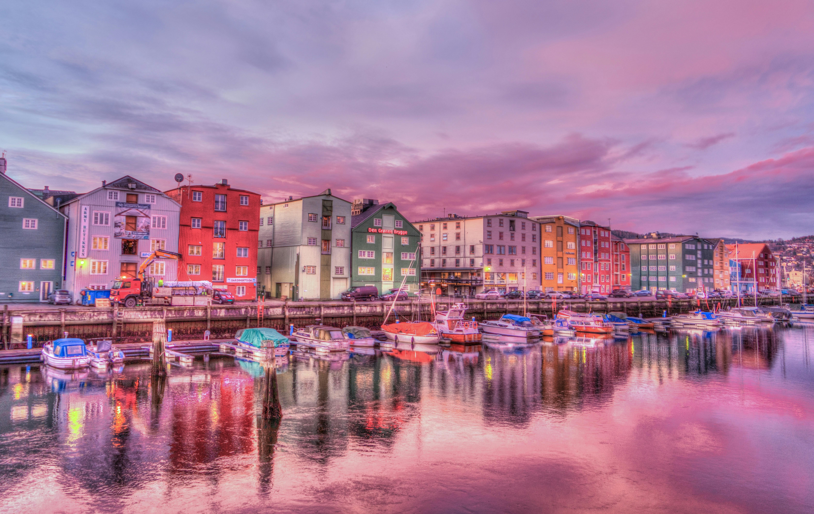

My Hobbit is Travel Go to Thailand

recommended destination
Thailand
Travel eriod
5 days 3 nights
visiting city
Incheon > Bangkok > Pattaya > Incheon
transportation
Korean Air, Jeju Air, Asiana Airlines
suggestion! Pattaya
Located on the eastern side of the Gulf of Thailand, Pattaya is known as the “Hawaii of the East” for its sunny beaches, beautiful
beaches and delicious seafood. The 15-kilometer-long coastline with lapping crystal-clear waters is a favorite tourist destination
for sunbathers and beaches for aficionados from around the world. Water sports are also plentiful, and jet skiing, parasailing and
diving are a must-try if you are traveling here.
-

-

-

Tailand
Bangkok Royal Palace | SEA LIFE Ocean World Bangkok | Chao Phraya River | Chiang Mai Night Zoo | Chiang Mai | Phra That Doi Suthep
Temple | Phuket Simon Cabaret Show | Patong Beach | Phuket FantaSea | Tiffany Show | Sanctuary of Truth Museum | Pattaya Floating
Market | Ao Nang Beach | Railay Beach | Krabi Town | Samui Island | Chaweng Beach | Lamai Beach | Hua Hin Beach | Hua Hin Night
Market | Banana Bar Water Jungle | Leung Khun Temple (White Temple) | Van Dam Museum Black House | Blue Temple (Wat Lung Suaten) |
Phi Phi Islands | koh phi phi money | Maya Bay | Pai Love Strawberry | Pai Historical Bridge | Pai Gorge
-

-

-

Let's go to Thailand